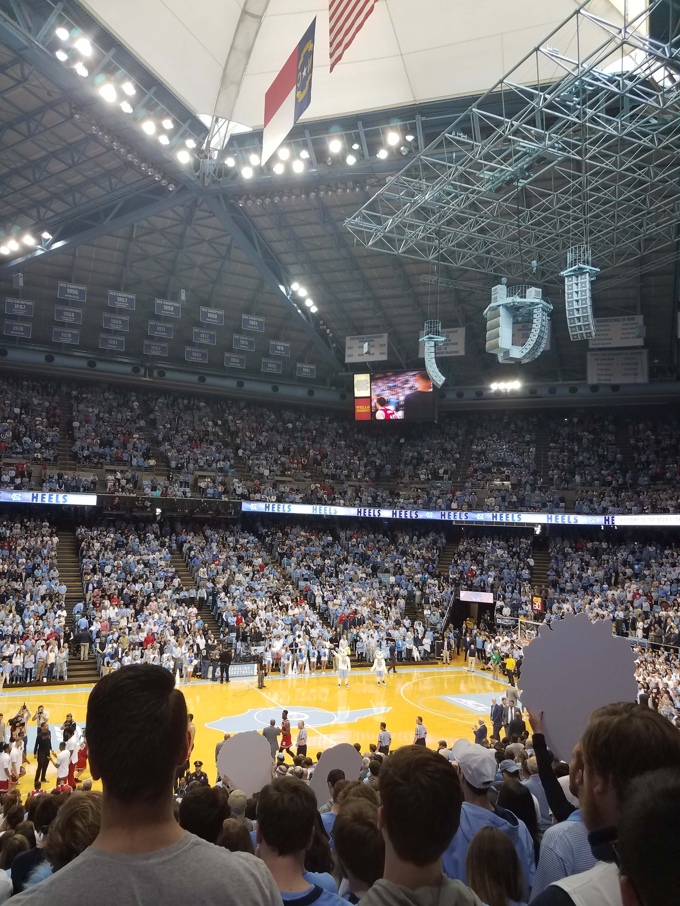

If a religion is a set of beliefs and rules that a person devotes
themselves to because they believe in a greater importance, then the
raw passion that I witnessed on February 8, 2018, made it obvious to
me that a religious-like devotion can come in many different shapes
and forms. Whenever I close my eyes, I can still remember the
excitement like it was yesterday. It was the day that the school for
which I attend, the University of North Carolina, was destined to
collide in a men’s basketball game with the loathed Blue Devils of
Duke University. However, make no mistake about it, the anticipation
and preparation for this single event had been building for weeks in
advance, and on the day of the game it seemed like the air itself
within Chapel Hill could explode at any given moment with the
abundance of excitement and anxiousness. You could see it on the faces
of the people, on the decorations on the buildings, and even in the
sounds of the city. Although the calendar only read the date of
February 8, it was obvious that this was no ordinary day in the hearts
of the people within these communities.
For some families
in North Carolina, the college basketball rivalry that occurs on
“Tobacco Road” between the state’s most
 prominent
colleges run deeper than blood itself. While it may be just a series
of rudimentary games, these in-state clashes have the potential to
divide happy families in half, the power to pull an individual through
their monotonous 9-5 job each and every day, and the ability to give a
broken person the chance to momentarily forget about their sorrows as
they participate in the roller coaster of emotions that exist within
the game. To the winner goes the spoils, and to the loser goes weeks
of embarrassment as they are inevitably forced to intermingle with
fans of the winning team.
For this version of the self-proclaimed
“greatest rivalry in sports”, the town of Chapel Hill served as host
for the game that would command the nation’s attention. Located near
the center of North Carolina and in close proximity to the other large
cities within the state, Chapel Hill is the ideal college town and
absolutely thrives off of the energy that flows from the college
campus. It is as if the town comes alive for this game, and the local
businesses and restaurants do the same. For me personally, I grew up
counting down the days to the annual Carolina-Duke game as a child and
dreamed of one day being able to participate in the spectacle for
myself. This game in February was my first taste of the rivalry as an
actual student at Chapel Hill, and I vividly remember how the entire
atmosphere around seemed surreal, as if the normal world couldn’t
possibly contain this much passion. I watched the game in an
auditorium filled to the brim with other UNC students, and every point
scored was cheered as if the lottery was just won. When the game had
ended and Carolina had emerged victorious, every single student on
campus proceeded to rush Franklin street in a full out sprint. Looking
back, I can still feel the cold air sting my lungs as I pushed myself
to run faster than I ever have. For someone who grew up watching the
unfolding events through the monitor of a TV screen, the feeling of
actually being felt more powerful than even words can describe. It may
just be a simple game, but it means so much more.
← Seeing Life on the Other Side